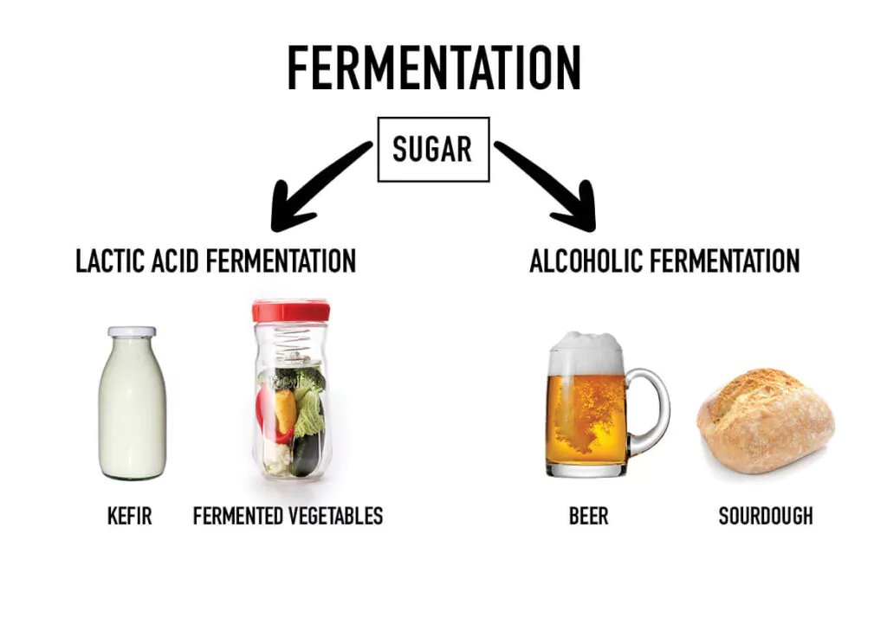

Fermentation = ?
September 29, 2024 by Nathan

Fermentation is the key to transforming simple grape juice into delicious homemade wine. It’s a natural process where yeast converts the sugars in the juice into alcohol and carbon dioxide. With just a few ingredients and some patience, I turned fresh grape juice into a flavorful wine through alcoholic fermentation.
Over time, the yeast worked its magic, breaking down the sugars and giving the wine its characteristic flavor and alcohol content. It’s fascinating to watch this process unfold, and the result is a smooth, homemade wine that's as rewarding to make as it is to enjoy.
Tackling College Stress: How to Stay Balanced
September 29, 2024 by Jonathan Bennett
College life brings exciting opportunities, but it also comes with a fair share of stress. Between classes, assignments, exams, and balancing a social life, it’s easy to feel overwhelmed. The pressure to perform well academically while managing personal responsibilities can be intense, but handling college stress effectively is essential for your well-being.
Reaching out to friends, classmates, or professors can also provide support when things feel overwhelming. Campus resources like counseling services are there to help too—don’t hesitate to use them. And remember, maintaining a healthy lifestyle with regular sleep, exercise, and balanced meals can do wonders for managing stress.
It’s okay to ask for help and take things one step at a time. Keeping a healthy balance will not only help you survive college but thrive in it!